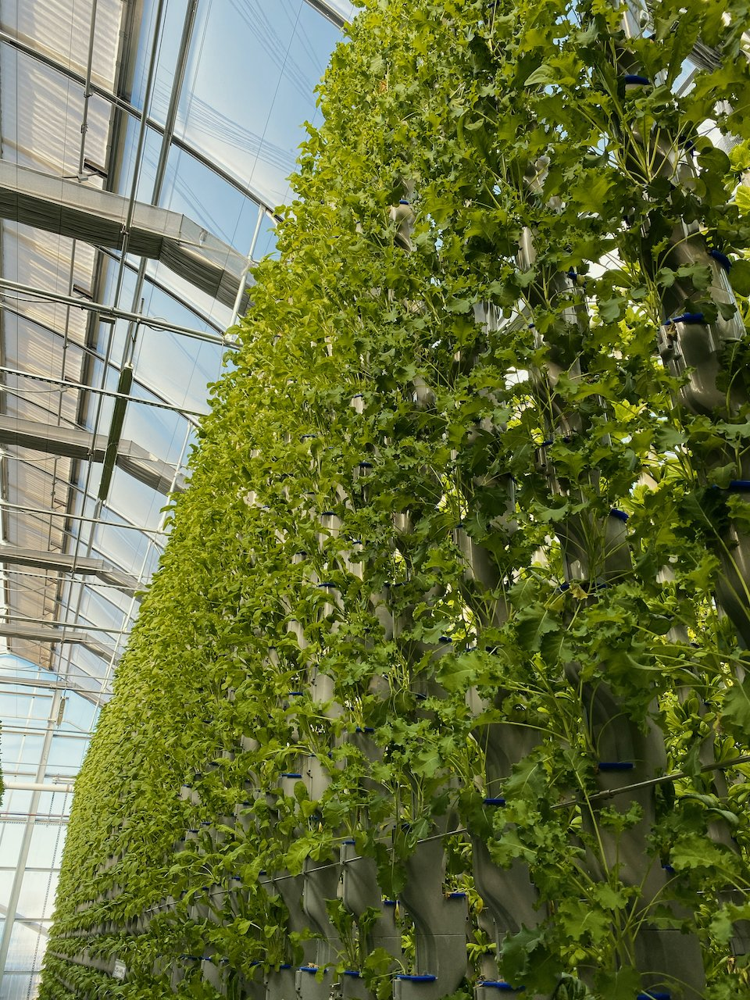

Did someone try to plant cucumber? If so, what were the temperature and humidity levels?
Frequently Asked Questions
Since indoor vertical farming and hydroponic technology is new to most, our partners tend to have a lot of questions about our process and products.
If you haven’t found the answer you’re looking for, contact us for a deeper dive.


Mahmouud Ali
Yes, I planted some one month ago, it’s looking good so far. I used the VF default data.
User1234
I have got some good quality cucumber, temperature was set at 28°C, humidity level at 33%. But I used some fertilizers every 10 days.